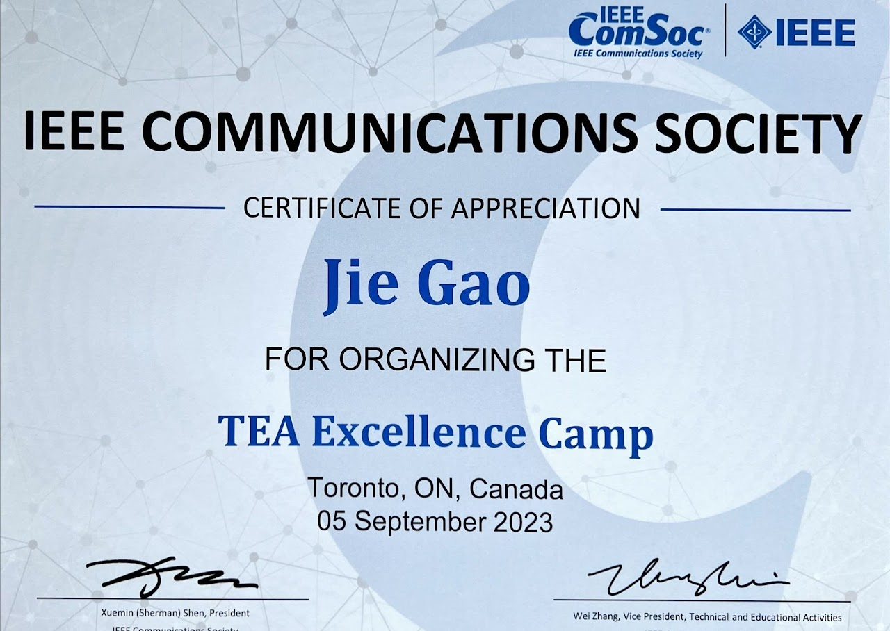

Editing
Society Service
- IEEE Vehicular Technology Society Young Professional Ambassador, since 2024
- IEEE Sensors Council Representative for Vehicular Technology Society, since 2024
Chairing
Conference Chairing
- Publicity Co-Chair, IEEE International Conference on Metaverse Computing, Networking and Applications (MetaCom), 2023
- Publication Co-Chair, 7th ACM/IEEE International Conference on Internet of Things Design and Implementation (IoTDI), 2022

Symposium, Workshop, or Track Chairing
- Chair, "SAC - Backhaul / Fronthaul Communications", IEEE Global Communications Conference (GLOBECOM), 2024
- Panel Co-Chair, "Leaders of Tomorrow" Workshop by IEEE Toronto Section, 2024
- Co-Chair, Workshop on "Intelligence-native and Cooperation-native RAN for 6G", IEEE/CIC International Conference on Communications in China (ICCC), 2024
- Co-Chair, "Electric Vehicles, Vehicular Electronics, and Intelligent Transportation" Track, IEEE Conference on Vehicular Technology (Spring), 2024
- Co-Chair, "Emerging Technologies, 5G and Beyond", IEEE Conference on Vehicular Technology (Fall), 2023
- Award Co-Chair, IEEE ComSoc Frontier Networking Symposium, 2023
- Co-Chair, "AI for Network and Network for AI" Symposium, IEEE/CIC International Conference on Communications in China (ICCC), 2023
- TPC Co-Chair, Workshop on "Pervasive Network Intelligence for 6G Networks", IEEE International Conference on Computer Communications (INFOCOM), 2023
- Co-Chair, Workshop on "Emerging Radio Access Network (RAN) Technologies", IEEE/CIC International Conference on Communications in China (ICCC), 2022
- Lead Co-Chair, Workshop on "Autonomous Vehicular Networking", IEEE Conference on Vehicular Technology (Fall), 2021
TPC Member
- IEEE International Conference on Communications (ICC), since 2018
- IEEE Vehicular Technology Conference (VTC), since 2020
- IEEE Wireless Communications and Networking Conference (WCNC), since 2019
- IEEE International Symposium on Image and Signal Processing and Analysis, 2023
- IEEE International Conference on Sustainable Communication Networks, 2023
- IEEE Middle East & North Africa Communications Conference (MENACOMM), 2019, 2022
- IEEE/CIC International Conference on Communications in China (ICCC), 2022
- International Conference on Communications, Signal Processing, and their Applications (ICCSPA), 2022
- IEEE International Workshop on Computer Aided Modeling and Design of Communication Links and Networks (CAMAD), 2022
- IEEE Conference on Standards for Communications and Networking (CSCN), 2022
- International Conference on Artificial Intelligence and Big Data Analytics (ICAIBDA), 2021
- International Conference on Innovation and Intelligence for Informatics, Computing, and Technologies (3ICT), 2020
Reviwer
- IEEE Transactions on Wireless Communications
- IEEE Transactions on Mobile Computing
- IEEE Transactions on Vehicular Technology
- IEEE Internet of Things Journal
- IEEE Transactions on Communications
- IEEE Journal on Selected Topics in Signal Processing
- IEEE/ACM Transactions on Networking
- IEEE Transactions on Signal Processing
- IEEE Transactions on Dependable and Secure Computing
- IEEE Network
- IEEE Wireless Communications
- IEEE Communications Letters